pacman::p_load(data.table,tidyverse,htmlTable,ggforce,ggpubr,ggeffects,lme4,emmeans,mgcv,performance,nnet)4 Module 3
4.1 Recap from last week
What is the difference between supervised and unsupervised learning?
If I was to try predict a category or a class, what type of prediction problem would this be considered?
What are the benefits of developing a mini DAG or casual structure?
4.2 Goals for this week.
Introduction into R programming language and getting started with some descriptive statistics.
Understanding key terms; Exploratory analysis, Supervised vs Unsupervised problems, regression vs classification, prediction vs association.
A quick note on distributions - Supervised regression and classification problems using a generalized linear model framework. (Hypothesis testing)
Machine learning approach to Supervised learning
The below is an exert from a book that I have stolen that I think does a great job a summarizing the goal of statistical modelling.
“Almost every statistical analysis begins with some kind of statistical model. A statistical model generally takes the form of a probability distribution that attempts to quantify the uncertainty that comes with observing a new response. The model is intended to represent the unknown phenomenon that governs the observation process. At the same time, the model needs to be convenient to work with mathematically, so that inference procedures such as confidence intervals and hypothesis tests can be developed. Selecting a model is typically a compromise between two competing goals: providing a more detailed approximation to the process that generates the data and providing inference procedures that are easy to use.”
pg1, Analysis of Categorical data with R Christopher R. Bilder and Thomas M Loughin. 2015.
This book also seems to be freely available from a google search.
http://ndl.ethernet.edu.et/bitstream/123456789/28010/1/Christopher%20R.%20Bilder_2015.pdf
4.3 Load data and packages
urlfile="https://raw.githubusercontent.com/R2mu/GWS_DSPR/main/data/mod2data.csv"
data1 <- fread(urlfile)
urlfile2="https://raw.githubusercontent.com/R2mu/GWS_DSPR/main/data/shotdata.csv"
data2 <- fread(urlfile2)
data2 <- data2|>
rename(Rotated.xStd=shots.details.locationRotated.xStd,
Rotated.yStd=shots.details.locationRotated.yStd)4.4 Basic probability and distributions
We are going to explore the idea of modelling a probability distribution today. Now there are many different varieties of probability distributions that exist, but we will just explore a couple of them that I from my experience will cover the largest chunk of questions you may be interested in asking in sport.
1) The normal distribution, often referred to as the bell curve, is appropriate for many situations involving continuous data. It is characterized by its symmetric shape, where most of the observations cluster around the mean, and the probabilities for values taper off equally on both sides. This distribution is particularly suitable for variables such as score differential, meters gained, and other player statistics with high means.
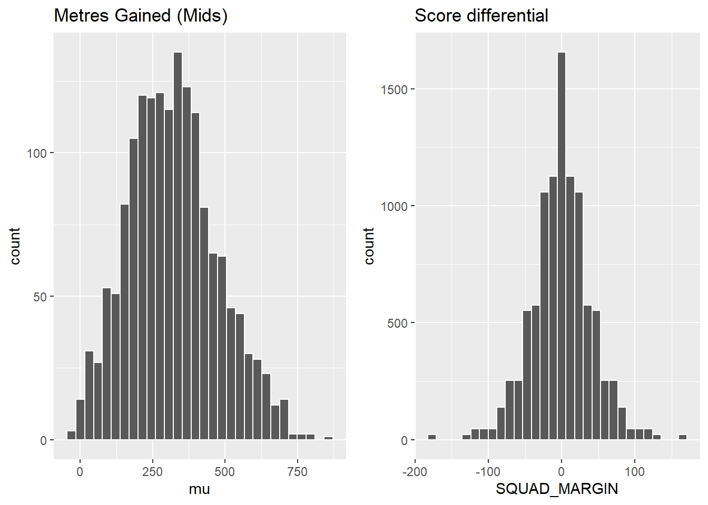
2) Binomial Distribution: The binomial distribution is ideal for modeling the number of successes in a fixed number of independent trials, where each trial has two possible outcomes (success or failure) and a constant probability of success. It is particularly useful for scenarios where you are counting the number of times an event occurs, such as the number of goals scored by a player in a series of attempts, or the number of games won in a season. The binomial distribution is defined by two parameters: the number of trials (n) and the probability of success (p). It helps in situations where the outcomes are discrete and the trials are independent, allowing for the calculation of probabilities for different numbers of successes.
Lets say for example you wanted the model probability of Toby Greene kicking 4 goals from 5 attempts in a game.
x = 4 # represents number of GOALS
n = 5 # From 5 attempts
p = 0.57 # with a baseline probability per attempt of 0.57
round(dbinom(x,n,p),2)[1] 0.23This means that, under these conditions, there is a 23% chance that Toby will achieve 4 successful goals in 5 attempts.
If we wanted to plot all the outcomes e.g 1 from 5, 2 from 5 etc etc it would look like the below
binom_prob = dbinom(0:5,5,0.57)
plot(0:5, binom_prob, type = "h", lwd = 2, col = "blue",
xlab = "Number of Goals", ylab = "Probability",
main = "Binomial Distribution of number of goals from 5 attempts")
points(0:5, binom_prob, pch = 16, col = "blue")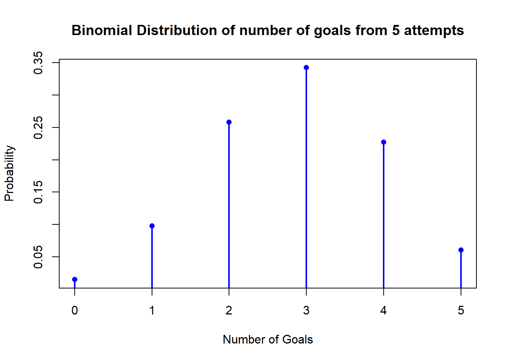
3) The Poisson distribution: is appropriate for modelling the number of events occurring within a fixed interval of time or space, particularly when these events are rare or infrequent. It is often used for count data where the mean number of occurrences is low, such as the number of goals scored in a single match by a player, the number of customer arrivals in an hour, or the number of system failures in a day. The Poisson distribution is defined by a single parameter (λ), which represents both the mean and the variance of the distribution. In my experience this assumption regarding the mean and variance is often violated so other parameters can be introduced to the assumption to deal with it.
g1= ggplot(data1,aes(TACKLE))+
geom_histogram(col="white")
g2 =ggplot(data1,aes(CONTESTED_POSSESSION))+
geom_histogram(col="white",binwidth = 1)+
scale_x_continuous(limits = c(0,20))
ggarrange(g1,g2)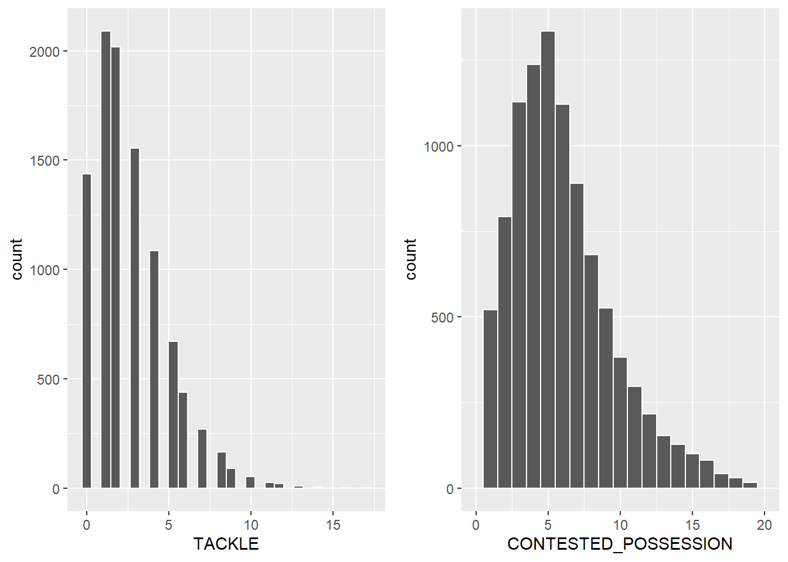
4.5 Generalized Linear models
4.5.1 Gaussian example
Now the we’ve had a look at some distributions we are going to have a look at some methods for modelling different distributions. In week 1 we modeled how well a simple linear regression model could predict score differential. Mathematically, a linear regression model can be thought of as saying a prediction of Score differential is Normally distributed with some mean \(\mu\) and standard deviation \(\sigma\) .
\(\text{Score differential} \sim \text{Normal}(\mu_i,\sigma)\)
Where the mean can be described by a linear equation
\(\mu_i = \alpha+\beta_1 X_1+\beta2 X_2\).
Now this might look a little scary but this effectively just y = mx+b that you have learnt in high school, except in this case \(X_1\) might represent inside 50s and \(X_2\) might represent disposals. Since we have two variables this is a multiple regression model.
The figure below hopefully helps make this idea that a prediction can be thought of as a sample from the normal distribution with a conditional effect based on the predictor variable
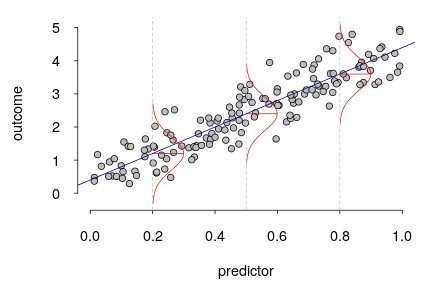
4.5.2 Binomial example.
Lets go back to our binomial probability example we were talking about before. We might say something like the probability of scoring a goal is binomially distributed with some probability \(p_i\).
\(\text{Goal success} \sim \text{Binomial}(1,p_i)\)
The issue we have here is that \(p_i\) which represents the probability success, is obviously going to be impacted by things such as distance from goal, angle from goal and whether it was during play or a set shot. So what we are interested in doing is estimated how this probability \(p_i\) will change as a function of those variables, which we do in the same manner we estimated the mean in the linear regression model above.
\(logit(p_i) = \alpha +\beta_1 X_1+\beta2 X_2\)
You can think of \(B_1\) as maybe distance from goal and \(B_2\) as angle from goal possibly. The other thing you may notice is that the \(p_1\) has been wrapped in a logit function. This is one example of the super power of generalized linear models. Effectively, we are able to keep the same notation as we would for a simple linear model, but we transform this linear combination to make sure that the result stays between 0 and 1 or Miss and GOAL in our example. This logit (logistic) function is why you will often here modelling 0 and 1s as logistic regression.
4.5.3 Poisson Example
If we were modeling a count or something that fits a Poisson distribution, the transformation would be:
\(log(\lambda) = \alpha +\beta_1 X_1+\beta2 X_2\)
This time \(log(\lambda)\) would transform the linear predictors to be constrained to match the poisson distribution. It should be noted that Poisson distributions can be a little more tricky to deal with, as there are some other parameters to consider tuning which relate to dispersion etc. These are more advanced topics and outside the scope of this practical.
4.6 Binomial Example / xG model
Okay so now we have got past the theory, lets delve into some examples. Our first example is going to be developing our own expected Goals/Points models which can be just simply thought of as a binomial/logistic regression model. We will use information related to shot location and shots detail (General play, Set shot etc) to predict the probability of a goal being scored.
First things first, lets do some quick data cleaning.
shot_small <- data2%>%
filter(Rotated.xStd>(-20))|>
mutate(Shot_outcome = as.factor(ifelse(shots.result.code=="G",1,0)),
Champ_Xp_err = round(shots.result.points-shots.result.pointsExpected,3))ggplot()+
geom_ellipse(aes(x0 = 0, y0 = 0, a = 80, b = 70, angle = 0))+
geom_hex(shot_small,
mapping= aes(x=Rotated.xStd,y=Rotated.yStd),
bins=30)+
xlim(c(-80,80))+
theme_minimal()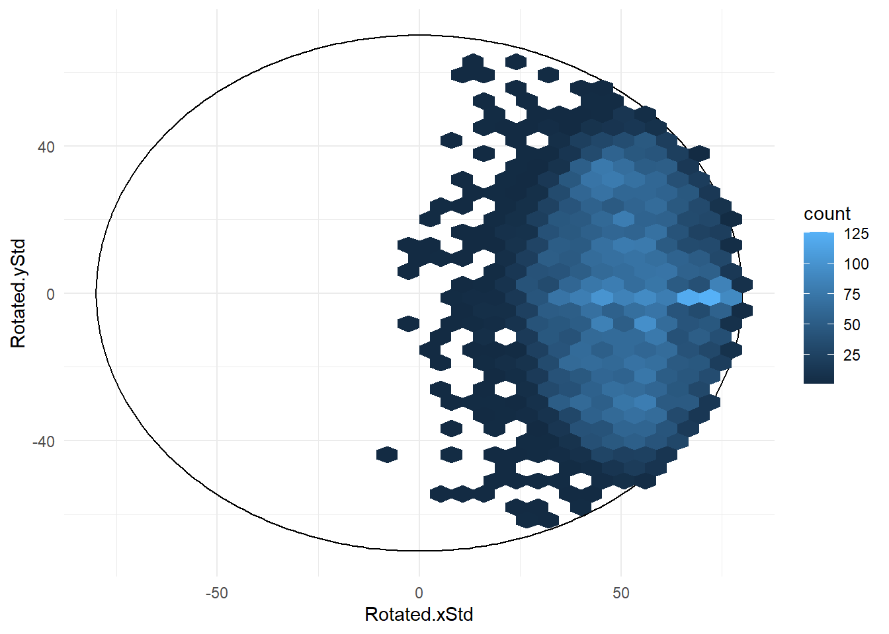
ggplot(shot_small,
aes(x=Rotated.xStd,
y=Rotated.yStd,col=shots.result.code))+
geom_point(alpha=.3)+
geom_density2d(col="gray90")+
theme_minimal()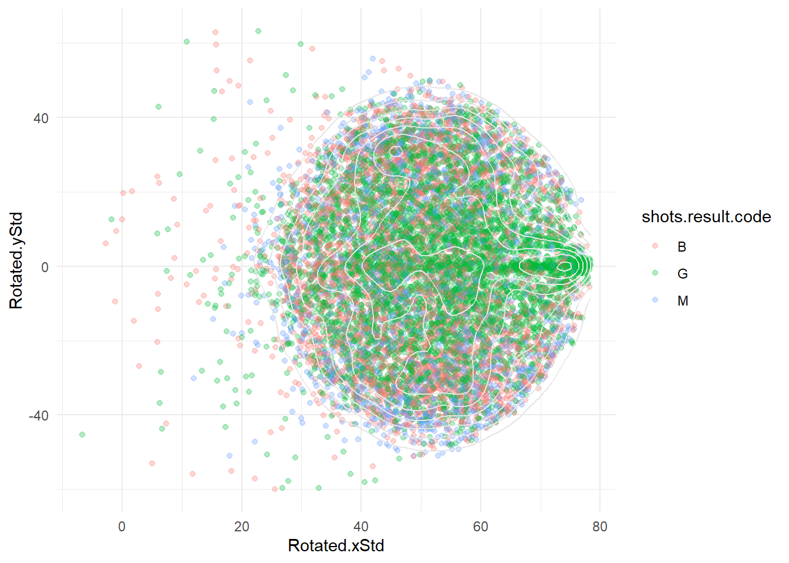
Lets have a quick look at how well the champion data expected points model does.
MAE = mean(abs(shot_small$Champ_Xp_err))
ggplot(shot_small,aes(abs(Champ_Xp_err)))+
#geom_histogram(col="white")+
ggtitle(paste("Campion xG error =", round(MAE,2)))+
geom_density(fill="gray80")+
theme_minimal()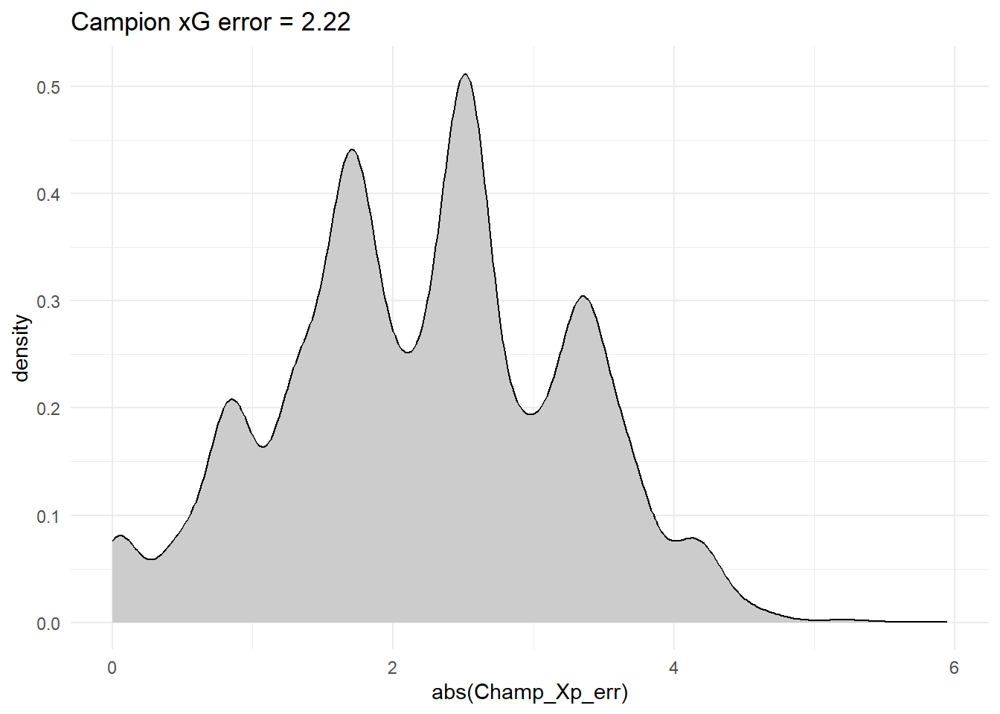
Before we look to build our first model. Lets do some simple exploratory statistics of some of the parameters we will likely end up including in our model.
shot_small|>ggplot(aes(y=80-Rotated.xStd,x=Shot_outcome,
col = shots.details.type))+
geom_jitter(height = .1,alpha=.1)+
geom_boxplot(width=.4)+
coord_flip()+
facet_wrap(~shots.details.type,ncol = 1)+
theme_light()+
theme(legend.position = "bottom")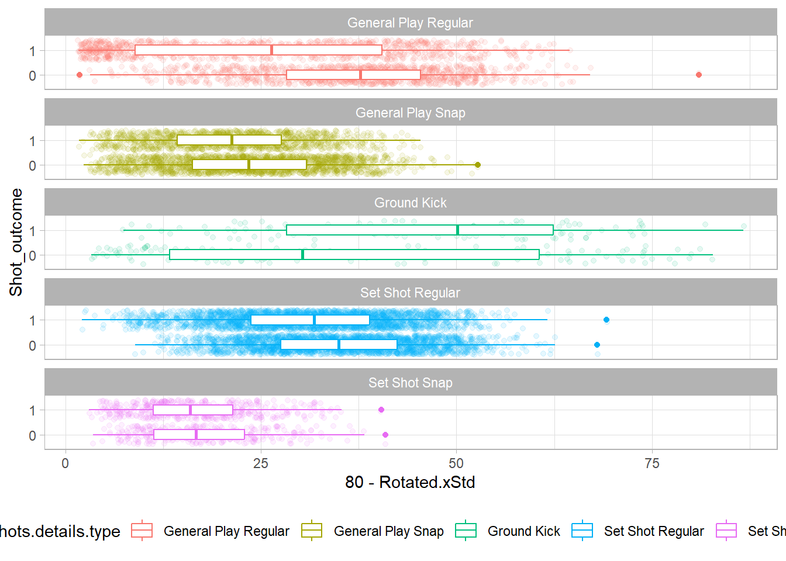
Not the best looking plot, but in general we can a small impact of the closer we are to the goals in x_direction the more likely we are to score a goal. Lets try model this along with the y component.
m1 <- glm(Shot_outcome~Rotated.xStd+Rotated.yStd,
data = shot_small,family = binomial)
s =summary(m1)
round(s$coefficients,3) Estimate Std. Error z value Pr(>|z|)
(Intercept) -1.197 0.081 -14.701 0
Rotated.xStd 0.022 0.002 14.196 0
Rotated.yStd 0.004 0.001 4.949 0Now lets spend a little bit of time thinking about what the above means. We will focus our time on the Estimate column. Now a logistic regression model returns coefficients (Estimate) on the log odds scale. So currently, if we focus on Rotated.xStd with its estimate of 0.022, this would mean as we get 1 metre closer to the goal holding all other variables constant our log odds of success increases by 0.022. If you still have no idea what that means, that’s okay—you are in the right place. It is often easier to understand if we convert log-odds to what are called odds ratios. We will do this below
data.frame(round(exp(coef(m1)),3)) round.exp.coef.m1....3.
(Intercept) 0.302
Rotated.xStd 1.022
Rotated.yStd 1.004Now we can say the odds of scoring a goal increase by 2.2% for every meter closer to the goal we get, holding all other variables equal. Keen-eyed readers might notice that the odds ratio and log-odds in this case return effectively identical numbers. Although it’s outside the scope of this module, for small values of the coefficients, both the log-odds and odds ratios will be similar.
However, both log-odds and odds ratios still have limitations in that they only express the relative difference between two scenarios. They do not provide information about how this impacts the absolute risk. This is a much bigger problem in datasets with imbalanced outcomes, such as low rates of injuries versus not injured. For instance, we might say the odds of injury increase by 50% under some condition, but this might only represent an absolute risk increase from 3% to 4.5%.
The easiest way around all this complexity is just to plot or return the values on the probability scale. Lets do this below.
xstd <- predict_response(m1, "Rotated.xStd")
ystd <- predict_response(m1, "Rotated.yStd")
p1 <- plot(xstd,show_data = T,jitter = 0.1)
p2 <- plot(ystd,show_data = T,jitter = 0.1)
ggarrange(p1,p2,common.legend = T)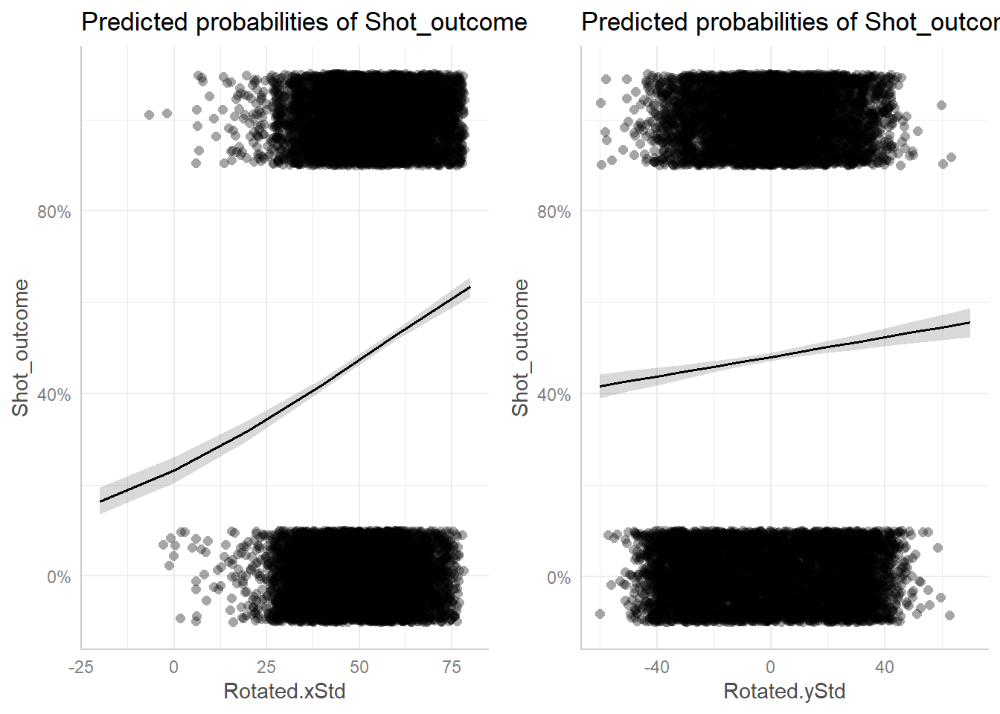
We can see the effects above but if you wanted to be more explicit about contrasting the impacts, you could do something like the below
em1 =emmeans(m1,~Rotated.xStd,
at = list(Rotated.xStd = c(25,50)),
type = "response")
print(em1) Rotated.xStd prob SE df asymp.LCL asymp.UCL
25 0.343 0.01012 Inf 0.323 0.363
50 0.474 0.00486 Inf 0.464 0.483
Confidence level used: 0.95
Intervals are back-transformed from the logit scale em1 |>
regrid()|>
pairs()|>
data.frame()|>
select(contrast,estimate) contrast estimate
1 Rotated.xStd25 - Rotated.xStd50 -0.13127674.7 Assess our first xG model
To do this we are going to predict our model response to the data.frame and multiple that number by 6.
shot_small <- shot_small|>
mutate(xG_m1 = predict(m1,type="response")*6,
m1_Xp_err = round(shots.result.points-xG_m1,3))
MAE_champ = mean(abs(shot_small$Champ_Xp_err))
MAE_m1 = mean(abs(shot_small$m1_Xp_err))
ggplot(shot_small,aes(abs(Champ_Xp_err)))+
#geom_histogram(col="white")+
ggtitle(paste("MAE_champ =",round(MAE_champ,2),"MAE_m1=",round(MAE_m1,2)))+
geom_density(fill="gray80",alpha=.3)+
geom_density(fill="blue",alpha=.3,
shot_small, mapping=aes(abs(m1_Xp_err)))+
theme_minimal()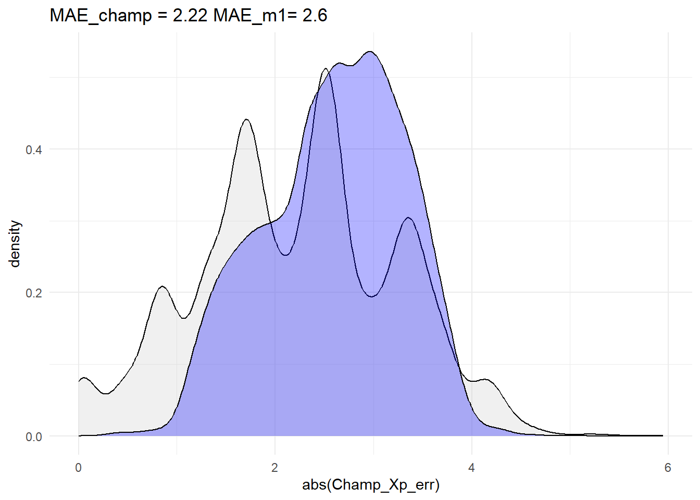
Okay so we are slightly better than just flipping a coin on each shot at goal but champion is still a better model at the moment. Lets try one more model and see how we go.
shot_small$shots.player.displayName<-as.factor(shot_small$shots.player.displayName)
shot_small$shots.details.type<-as.factor(shot_small$shots.details.type)
m2 <- bam(Shot_outcome~te(Rotated.xStd,Rotated.yStd,by=shots.details.type)+
s(shots.player.displayName,bs="re"),
family = binomial,
nthreads=8,
discrete = T,
data = shot_small ,method = "fREML")library(earth)Warning: package 'earth' was built under R version 4.3.3Loading required package: FormulaLoading required package: plotmoWarning: package 'plotmo' was built under R version 4.3.3Loading required package: plotrixWarning: package 'plotrix' was built under R version 4.3.2m3 = earth::earth(Shot_outcome~Rotated.xStd+Rotated.yStd+shots.details.type,
degree=2, glm=list(family=binomial),data = shot_small)
plot(m3, which = 1)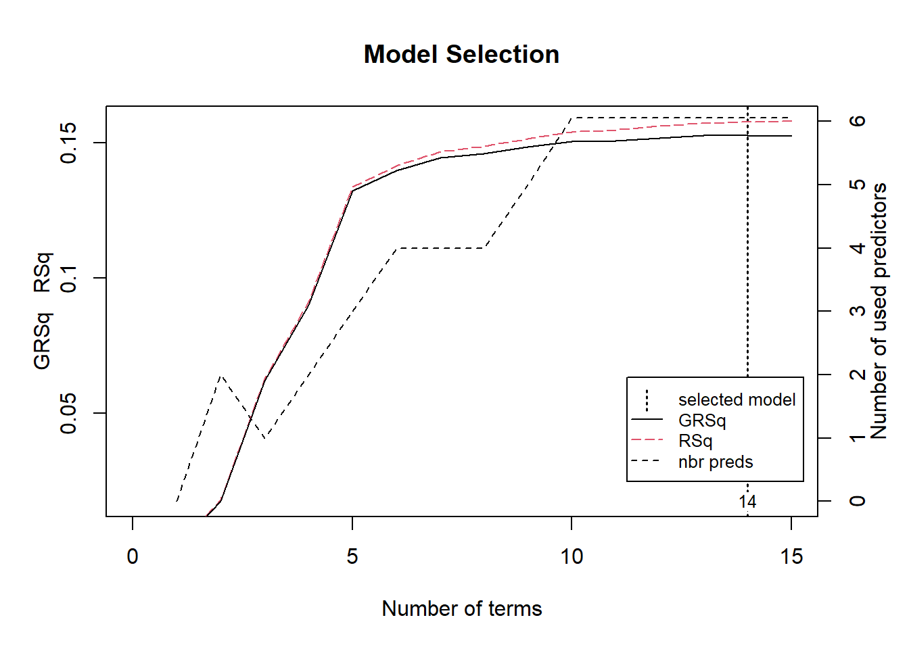
pdp::partial(m3, pred.var = "Rotated.xStd",prob =TRUE,
grid.resolution = 10,) %>% autoplot()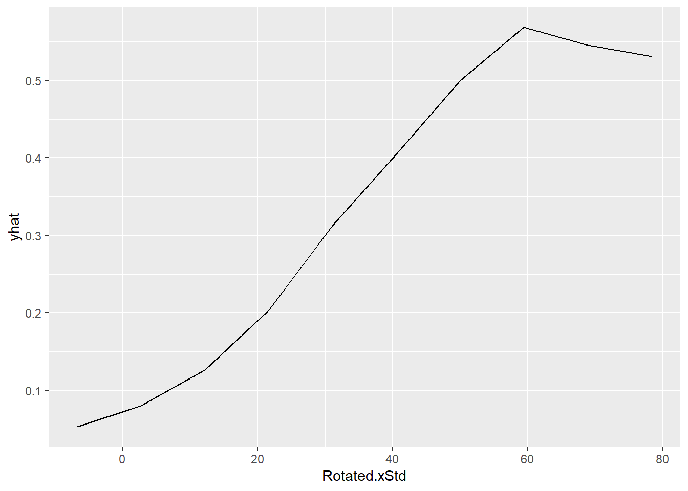
We won’t bother looking at the coefs for now lets just see if we are getting better performance.
shot_small <- shot_small|>
mutate(xG_m2 = predict(m2,type="response")*6,
xG_m3 = predict(m3,type="response")*6,
m2_Xp_err = round(shots.result.points-xG_m2,3),
m3_Xp_err = round(shots.result.points-xG_m3,3))
MAE_m2 = mean(abs(shot_small$m2_Xp_err))
MAE_m3 = mean(abs(shot_small$m3_Xp_err))
ggplot(shot_small,aes(abs(Champ_Xp_err)))+
#geom_histogram(col="white")+
ggtitle(paste("MAE_champ =",round(MAE_champ,2),"MAE_m1=",round(MAE_m1,2),
"MAE_m2=",round(MAE_m2,2),
"MAE_m3=",round(MAE_m3,2)))+
geom_density(fill="gray80",alpha=.3)+
geom_density(fill="blue",alpha=.3,
shot_small, mapping=aes(abs(m1_Xp_err)))+
geom_density(fill="red",alpha=.3,
shot_small, mapping=aes(abs(m2_Xp_err)))+
geom_density(fill="yellow",alpha=.3,
shot_small, mapping=aes(abs(m3_Xp_err)))+
theme_minimal()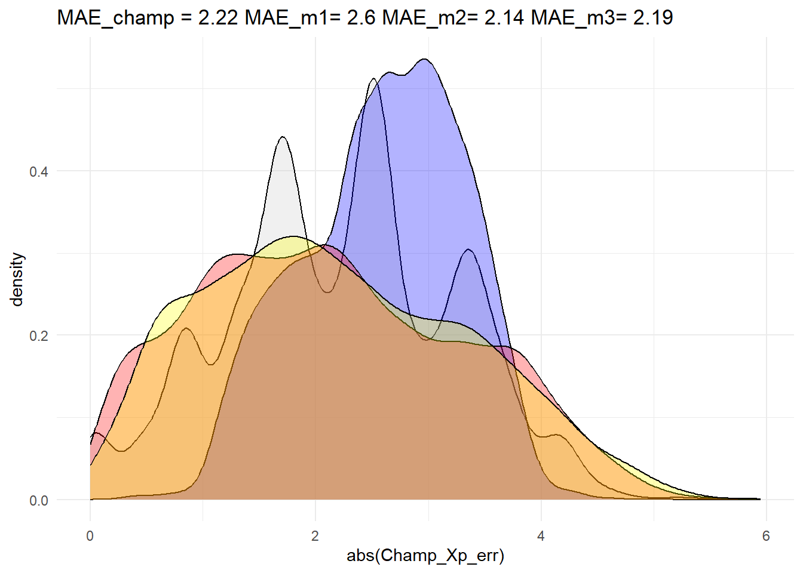
sum(abs(shot_small$Champ_Xp_err))-
sum(abs(shot_small$m2_Xp_err))[1] 889.98So over the 2013 season our GAM model better identified up 889 points when compared to the champion code.
Lets see if we can better visualize what our final model thinks
par(mfrow=c(1,2),cex=.9)
vis.gam(m2, view = c("Rotated.xStd", "Rotated.yStd"),
cond=list(shots.details.type="Set Shot Regular"),
plot.type = "contour",
color = "heat",too.far = 0.1,
lwd=2,labcex = 0.8,
contour.col = "black",nCol = 20,
type = "response",main ="Set Shot Regular")
vis.gam(m2, view = c("Rotated.xStd", "Rotated.yStd"),
cond=list(shots.details.type="Set Shot Snap"),
plot.type = "contour",
color = "heat",too.far = 0.1,
lwd=2,labcex = 0.8,
contour.col = "black",nCol = 20,
type = "response",main ="Set Shot Snap")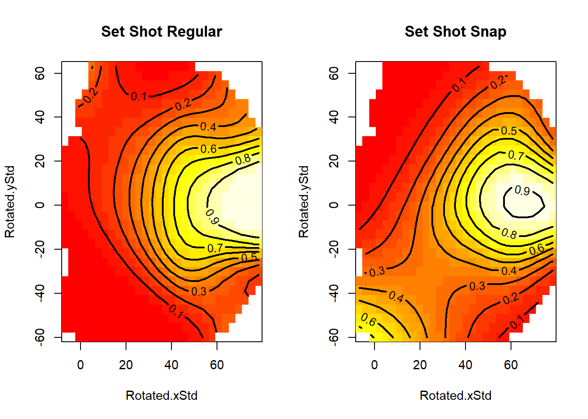
par(mfrow=c(1,1))4.8 Circling back
At the beginning, you may remember my reference to developing a model that not only describes the data-generating process well but also has good properties that can be tested via hypothesis testing. I have deliberately focused more on using visuals to identify the magnitude of the effects we have observed rather than delving deeply into hypothesis testing. While hypothesis testing is a valuable resource, using it successfully requires at least a basic understanding of which assumptions are valid for a given model and which are not.
For example, our initial model did not perform well because it was not specified correctly; we failed to account for the fact that there were many repeat observations among players. This violates the independence assumption of GLMs and affects the calculation of standard errors and p-values.
In practice, you would typically first identify the probability family appropriate for your response variable, such as binomial, Poisson, or Gaussian. Next, you would select models capable of handling those probability distributions and then check the assumptions underlying those models. Some assumptions can be identified as broken just by understanding your dataset, while others can only be tested after you have built the model.
4.8.1 Key Assumptions to Consider
Independence: For many models, including GLMs, observations are assumed to be independent. Violations of this assumption, such as repeated measures on the same subjects, need to be accounted for.
Normality of Residuals: For linear models, residuals are often assumed to be normally distributed. This can be checked using diagnostic plots.
Homoscedasticity: Constant variance of residuals is another common assumption. Heteroscedasticity can affect the efficiency of estimates and the validity of hypothesis tests.
4.8.2 Practical Steps
Identify the Probability Family:
- Determine whether your response variable follows a binomial, Poisson, Gaussian, or another distribution.
Model Selection:
- Choose models that are appropriate for the identified probability distribution.
Check Assumptions:
Some assumptions, such as independence, can be known to be violated from understanding the dataset. For example, if the data includes repeated measures, this should be accounted for in the model.
Other assumptions, such as normality of residuals and homoscedasticity, can be tested after the model is built using diagnostic plots and tests.
Iterative Process:
- Model building is an iterative process. Start with a simple model, check assumptions, refine the model, and repeat as necessary.
By following these steps and being mindful of model assumptions, you can build more robust models and make more reliable inferences from your data
The below is a simple example of the subtle difference that can occur when specifying a model
shot_small$dis_char <- as.character(shot_small$shots.player.displayName)
m0 <- glm(Shot_outcome ~ shots.details.type ,data = shot_small,family = binomial)
m1_glmer =glmer(Shot_outcome ~ shots.details.type +(1| dis_char),data = shot_small,family = binomial)
s0 <- summary(m0)
sglmer <-summary(m1_glmer)
round(s0$coefficients,3) Estimate Std. Error z value Pr(>|z|)
(Intercept) -0.088 0.045 -1.958 0.050
shots.details.typeGeneral Play Snap -0.348 0.058 -5.966 0.000
shots.details.typeGround Kick -0.101 0.142 -0.709 0.478
shots.details.typeSet Shot Regular 0.167 0.053 3.122 0.002
shots.details.typeSet Shot Snap 0.481 0.088 5.495 0.000round(sglmer$coefficients,3) Estimate Std. Error z value Pr(>|z|)
(Intercept) -0.096 0.047 -2.047 0.041
shots.details.typeGeneral Play Snap -0.363 0.059 -6.131 0.000
shots.details.typeGround Kick -0.135 0.144 -0.942 0.346
shots.details.typeSet Shot Regular 0.135 0.055 2.465 0.014
shots.details.typeSet Shot Snap 0.459 0.089 5.126 0.0004.9 Final Models
4.9.1 Poisson model
Earlier we introduced the Poisson family regression for counts. Lets quickly explore trying to model TACKLES as a function of HARD_BALL_GET.
mean(data1$TACKLE)[1] 2.66093var(data1$TACKLE)[1] 5.012247count_model= glm(TACKLE~CONTESTED_POSSESSION,data1,
family = "poisson")
summary(count_model)
Call:
glm(formula = TACKLE ~ CONTESTED_POSSESSION, family = "poisson",
data = data1)
Coefficients:
Estimate Std. Error z value Pr(>|z|)
(Intercept) 0.456261 0.012017 37.97 <2e-16 ***
CONTESTED_POSSESSION 0.080189 0.001439 55.73 <2e-16 ***
---
Signif. codes: 0 '***' 0.001 '**' 0.01 '*' 0.05 '.' 0.1 ' ' 1
(Dispersion parameter for poisson family taken to be 1)
Null deviance: 19097 on 9935 degrees of freedom
Residual deviance: 16299 on 9934 degrees of freedom
AIC: 40427
Number of Fisher Scoring iterations: 5pred_count <- predict_response(count_model)
plot(pred_count,show_data = T,jitter = T)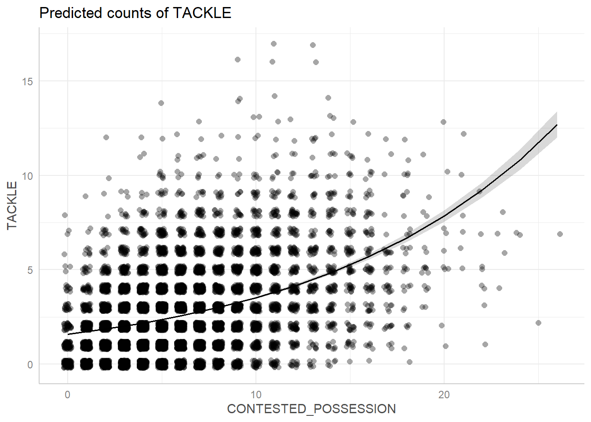
check_model(count_model)Not enough model terms in the conditional part of the model to check for
multicollinearity.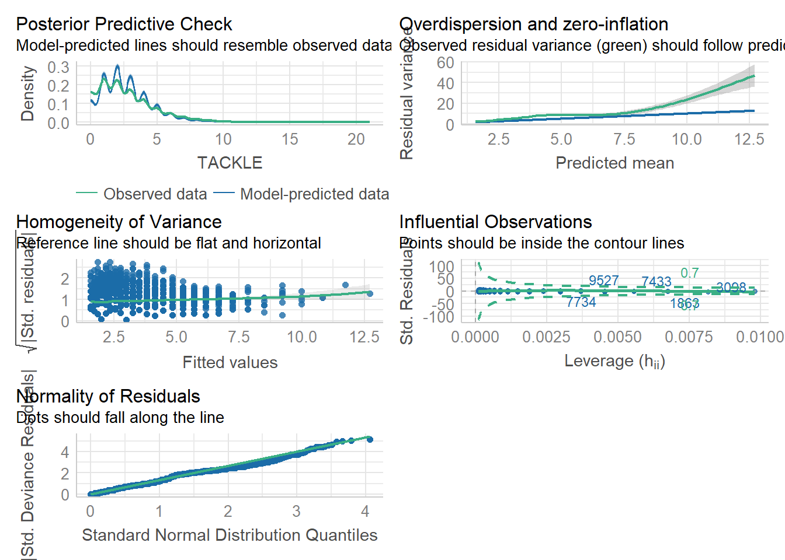
4.9.2 Multinominial
Lets say you were actually interested in modelling GOAL, BEHIND and MISS. Not just GOAL, MISS as we were before. You could do that using what is called a multinominal regression. This is extension of the GLM frame work but we have to use a different package to do this.
mnommod<- multinom(shots.result.code~Rotated.xStd+Rotated.yStd,data = data2)# weights: 12 (6 variable)
initial value 11962.789211
iter 10 value 11098.696107
iter 10 value 11098.696107
iter 10 value 11098.696107
final value 11098.696107
convergedggeffect(mnommod, terms = "Rotated.xStd") |>
plot()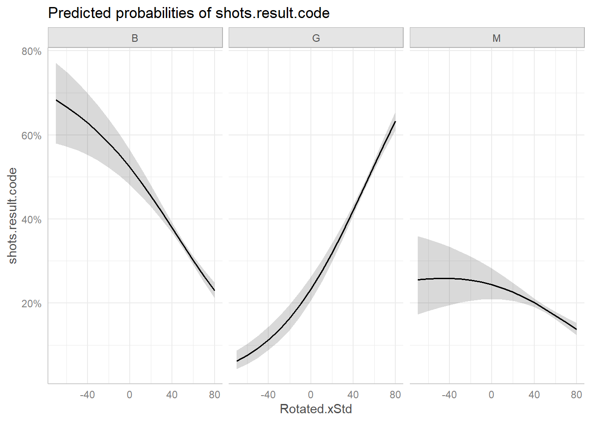
4.10 What we didn’t get time to explore
Gaussian regression
Poisson regression
Binomial regression (classification)
Fractional binomial regression
Quasibinomial regression
Multinomial classification
Gamma regression
Ordinal regression
Negative Binomial regression
Tweedie distribution
4.11 Next module
We are going to skip a lot of the math and look to say who really cares about all the technical stuff, lets just see how well we can predict something.